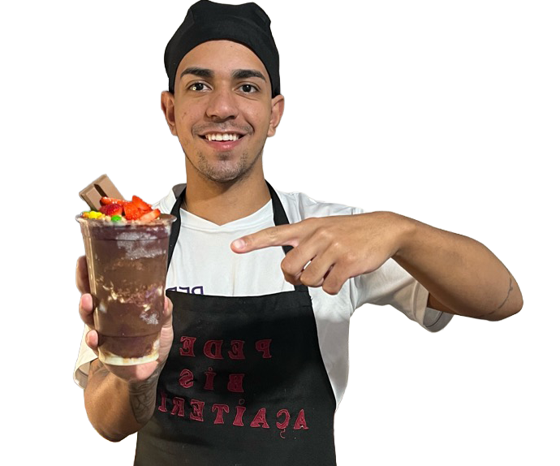
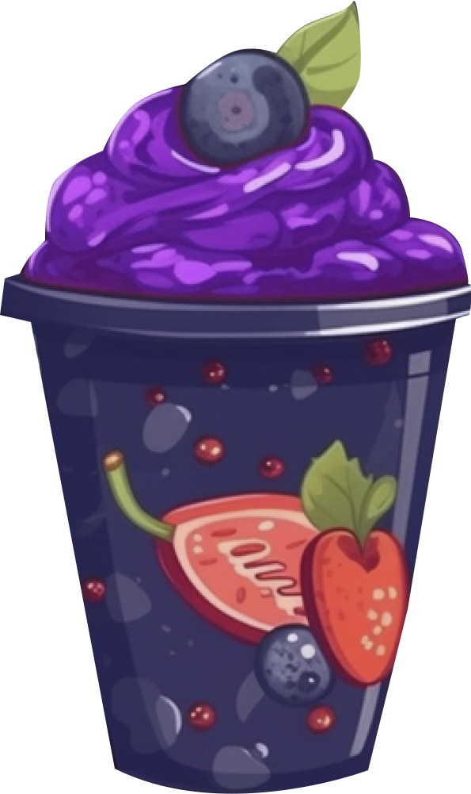
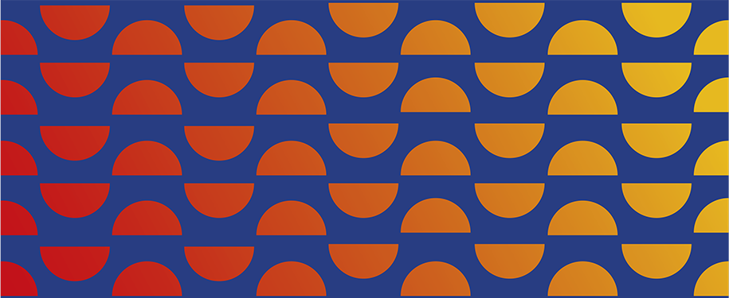

Como vender mais pelas
Redes Sociais
Por: Bruna Cruz
Como Thiago Oliveira saiu da cozinha de casa e transformou o Pede Bis em uma máquina de vendas que fatura até R$ 120 mil por mês usando o digital
Ele não tinha plano de negócio, investimento alto ou formação em gestão. Tinha prática, necessidade e disposição para testar. Aos poucos, Thiago Augusto de Oliveira Silva, de Bandeirantes (PR), transformou o começo simples em casa em uma operação que hoje reúne fábrica, delivery e distribuição, com faturamento mensal que vai de R$ 90 a R$ 120 mil. Mais do que vender açaí, ele construiu um sistema que fornece suprimentos para outras pessoas que também querem atuar na área.
Thiago trabalhou em uma padaria por dois anos antes de começar a empreender em casa. Quando decidiu apostar no açaí, em 2020, os pedidos demoraram a acontecer. A virada veio de onde muitos ainda subestimam: o conteúdo. Vídeos simples, feitos com os recursos que tinha, começaram a atrair clientes. “Quanto mais eu postava, mais vendia”, conta.
A pandemia ajudou a acelerar as vendas com o boom do delivery. O que era sazonal ganhou frequência e o negócio começou a tomar forma.


“O cliente quer sempre o mesmo produto. Se você não padroniza, perde a venda”
Thiago Oliveira
SEM PROCESSO, NÃO SE ESCALA UM NEGÓCIO
O crescimento só se sustentou quando vieram os processos. Thiago estruturou o negócio com base em três pilares: gestão básica bem-feita, operação padronizada e marketing constante.
Na prática, isso significa ter uma ficha técnica para cada produto, controlar os custos, padronizar a montagem e manter uma rotina de divulgação.
✓ Gestão
Controle de custos, precificação e separação entre finanças pessoais e do negócio
✓ Operação
Ficha técnica por produto, padrão de montagem e checklist diário de produção
✓ Marketing
Rotina constante de publicação nas redes, tratada como parte da operação
Os principais erros de quem está começando
❌ Falta de gestão
❌ Desorganização financeira
❌ Falta de padronização
❌ Pouca divulgação
MAIS MARCAS, MESMA COZINHA
Quando uma marca atinge seu limite de crescimento, Thiago não insiste: ele cria outra. “É como começar do zero, mas já sabendo o caminho”, explica. Uma das novas operações, criada recentemente, já se tornou o segundo delivery que mais vende dentro do grupo.
Em vez de expandir com lojas físicas, novas marcas dentro da mesma cozinha permitem aproveitar conhecimento, estrutura, produto e insumos já existentes. Algumas marcas mantêm a mesma receita; outras mudam produto e posicionamento, permitindo testar mercados e alcançar consumidores que não se identificaram com as propostas anteriores.
No início, o cardápio era enxuto. A expansão veio com base na demanda, incluindo adicionais e novas opções de forma estratégica. Outro ponto-chave foi reduzir a dependência da sazonalidade. O açaí é o carro-chefe, mas a fábrica de sorvetes é uma importante aliada na gestão dos adicionais. Para o inverno, o cardápio conta com brownie e fondue.
Operação hoje:
3 operações de delivery
4 marcas rodando simultaneamente
1 fábrica de açaí e sorvete
1 agência de marketing
“A internet é a rua mais movimentada do mundo”
O NEGÓCIO VIROU ESCOLA
Sem curso, sem mentoria e sem atalhos, Thiago aprendeu fazendo; e percebeu que esse caminho tinha valor para outros empreendedores. Foi justamente das dúvidas que recebia nas redes sociais que surgiu uma nova oportunidade: ensinar.
Hoje, são cerca de 20 mil alunos em diferentes países aprendendo o que ele levou anos para dominar sozinho. “A pessoa consegue aprender em 6 a 9 meses o que eu levei 2 anos batendo cabeça.”
A produção de conteúdo nas redes, as aulas, as mentorias e os materiais didáticos foram estruturando uma operação digital completa, que levou à criação de uma agência de marketing. O digital, que começou como ferramenta de divulgação e venda, se tornou um negócio à parte.
O QUE VEM PELA FRENTE
Mais do que técnica, Thiago destaca a postura necessária, com resiliência no começo, confiança no processo e consistência na execução. “Você precisa acreditar no que está fazendo e aplicar todos os dias”, resume.
Mesmo com a operação consolidada, os planos seguem ambiciosos. O objetivo é expandir a fábrica e a distribuição, abrir novas unidades Pede Bis, criar um laboratório de receitas e estruturar um e-commerce. Outro ponto forte identificado é a criação de uma estrutura de fornecedores para melhorar a logística e promover o crescimento, além de explorar mais o ensino em cursos presenciais.
PUBLICIDADE